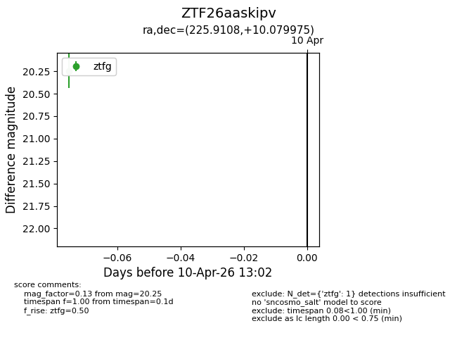
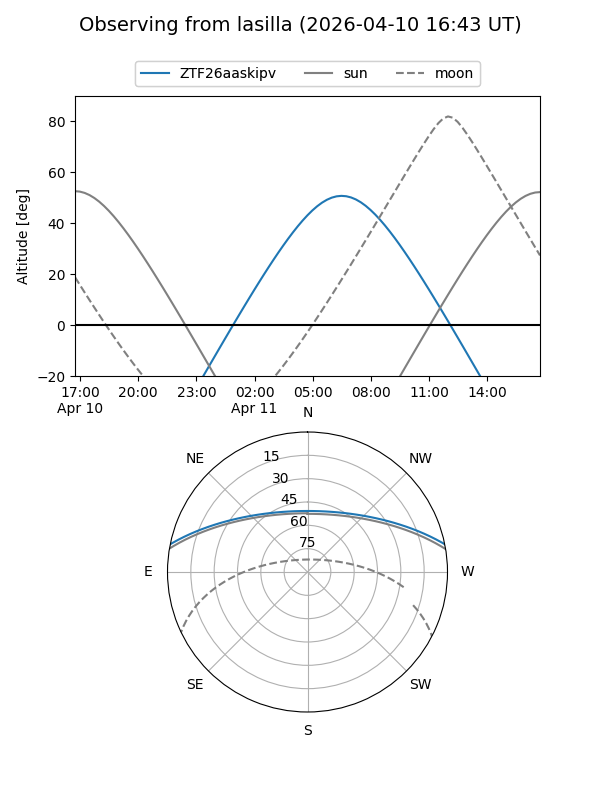
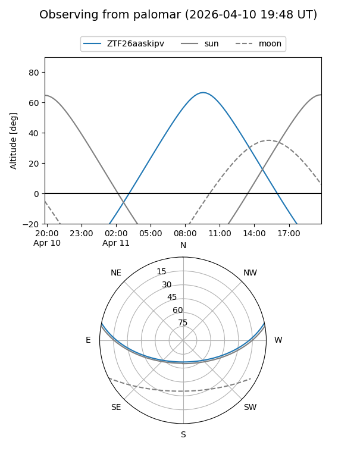

ZTF26aaskipv
Target ZTF26aaskipv at 2026-04-10 13:13
Aliases and brokers:
FINK: link
Lasair: link
ALeRCE: link
alt names
ZTF26aaskipv (ztf,fink_ztf)
Coordinates:
equatorial (ra, dec) = 225.9108,+10.07998
equatorial (HMS+DMS) = 15:03:38.59,+10:04:47.91
galactic (l, b) = (10.6043,+54.51480)
Flags:
Photometry:
last ztfg=20.25
1 ztfg detections
Lightcurve

Visibility


Additional plots